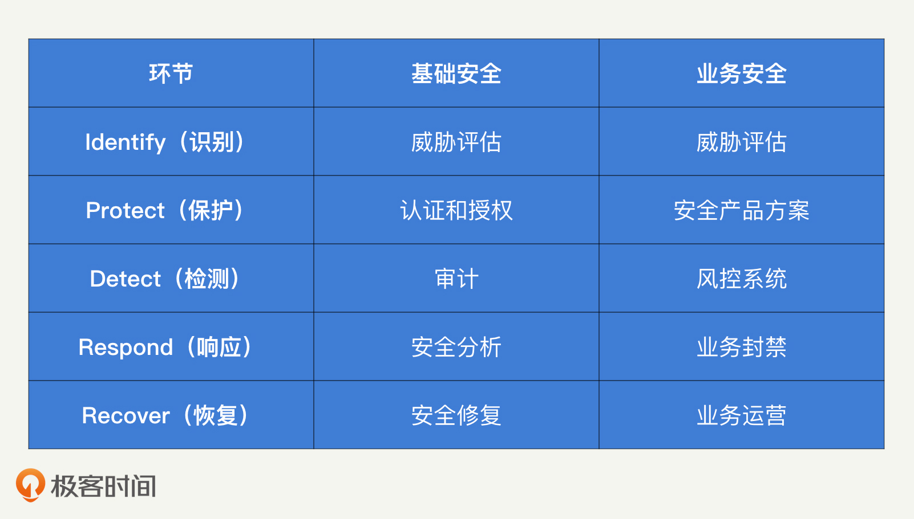
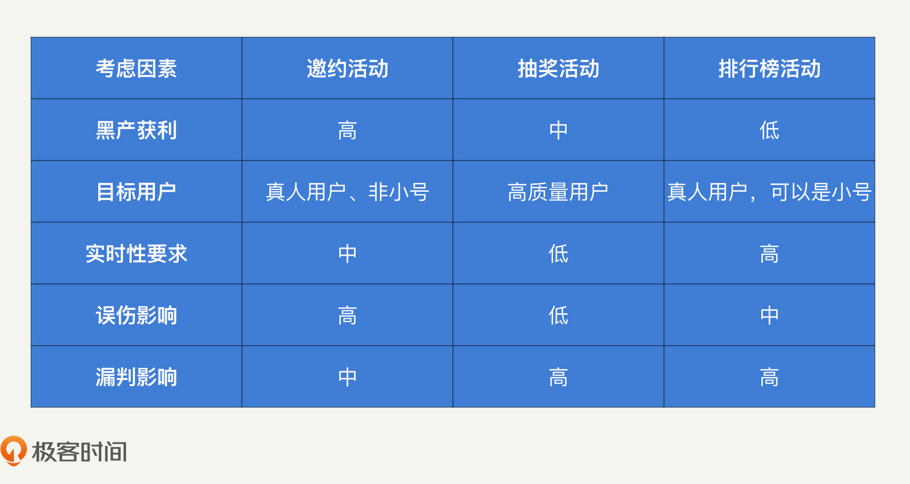
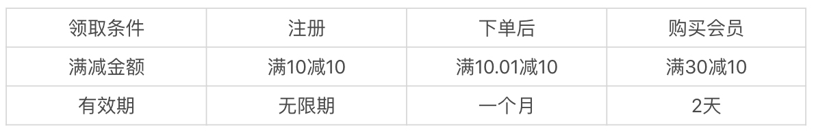

- 00 开篇词 别说你没被安全困扰过.md.html
- 01 安全的本质：数据被窃取后，你能意识到问题来源吗？.md.html
- 02 安全原则：我们应该如何上手解决安全问题？.md.html
- 03 密码学基础：如何让你的密码变得“不可见”？.md.html
- 04 身份认证：除了账号密码，我们还能怎么做身份认证？.md.html
- 05 访问控制：如何选取一个合适的数据保护方案？.md.html
- 06 XSS：当你“被发送”了一条微博时，到底发生了什么？.md.html
- 07 SQL注入：明明设置了强密码，为什么还会被别人登录？.md.html
- 08 CSRF_SSRF：为什么避免了XSS，还是“被发送”了一条微博？.md.html
- 09 反序列化漏洞：使用了编译型语言，为什么还是会被注入？.md.html
- 10 信息泄露：为什么黑客会知道你的代码逻辑？.md.html
- 11 插件漏洞：我的代码看起来很安全，为什么还会出现漏洞？.md.html
- 13 Linux系统安全：多人共用服务器，如何防止别人干“坏事”？.md.html
- 14 网络安全：和别人共用Wi-Fi时，你的信息会被窃取吗？.md.html
- 15 Docker安全：在虚拟的环境中，就不用考虑安全了吗？.md.html
- 16 数据库安全：数据库中的数据是如何被黑客拖取的？.md.html
- 17 分布式安全：上百个分布式节点，不会出现“内奸”吗？.md.html
- 18 安全标准和框架：怎样依“葫芦”画出好“瓢”？.md.html
- 19 防火墙：如何和黑客“划清界限”？.md.html
- 20 WAF：如何为漏洞百出的Web应用保驾护航？.md.html
- 21 IDS：当黑客绕过了防火墙，你该如何发现？.md.html
- 22 RASP：写规则写得烦了？尝试一下更底层的IDS.md.html
- 23 SIEM：一个人管理好几个安全工具，如何高效运营？.md.html
- 24 SDL：怎样才能写出更“安全”的代码？.md.html
- 25 业务安全体系：对比基础安全，业务安全有哪些不同？.md.html
- 26 产品安全方案：如何降低业务对黑灰产的诱惑？.md.html
- 27 风控系统：如何从海量业务数据中，挖掘黑灰产？.md.html
- 28 机器学习：如何教会机器识别黑灰产？.md.html
- 29 设备指纹：面对各种虚拟设备，如何进行对抗？.md.html
- 30 安全运营：“黑灰产”打了又来，如何正确处置？.md.html
- 加餐1 数据安全：如何防止内部员工泄露商业机密？.md.html
- 加餐2 前端安全：如何打造一个可信的前端环境？.md.html
- 加餐3 职业发展：应聘安全工程师，我需要注意什么？.md.html
- 加餐4 个人成长：学习安全，哪些资源我必须要知道？.md.html
- 加餐5 安全新技术：IoT、IPv6、区块链中的安全新问题.md.html
- 模块串讲（一）Web安全：如何评估用户数据和资产数据面临的威胁？.md.html
- 模块串讲（三）安全防御工具：如何选择和规划公司的安全防御体系？.md.html
- 模块串讲（二）Linux系统和应用安全：如何大范围提高平台安全性？.md.html
- 结束语 在与黑客的战役中，我们都是盟友！.md.html
- 捐赠
26 产品安全方案：如何降低业务对黑灰产的诱惑？
你好，我是何为舟。
在上一讲中，我们探讨了业务安全和黑产（也叫黑灰产），知道了业务安全的本质就是资源对抗，业务安全的防护手段就是提高黑产的资源成本，并且针对不同的资源类型，我们需要采取不同的方法来进行对抗。
在基础安全中，我们提出了“黄金法则”作为总体思路，来对各个防御手段进行梳理。那么，在业务安全中，我们有没有什么方法论可以作为参考呢？这一讲，我们就来聊一聊提高黑产资源成本的方法，以及如何从根本上防御黑产。
业务安全中的防御框架是什么？
在安全标准和框架中讲过，我们可以通过NIST的安全框架IPDRR，在基础安全中构建出一道比较全面的纵深防线。在业务安全中，IPDRR同样可以指导我们与黑产进行对抗。这里我总结了一张对比表格，你可以先了解一下IPDRR在基础安全和业务安全中的异同点。

接下来，再看我对业务安全中IPDRR内容的重点讲解。
- Identify（识别）：和基础安全一样，业务安全的识别阶段主要是进行威胁评估的工作。我们需要找到黑产可能获取到的业务逻辑中的投入成本，比如，应用发放的红包、优惠券等。
- Protect（保护）：在业务安全中，我们是通过产品方案来实施认证和授权过程的。比如，对于登录过程增加双因子认证和验证码等，就是加强认证的安全性。
- Detect（检测）：检测阶段主要是风控系统发挥作用。
- Respond（响应）：发现黑产的攻击后，我们可以通过封禁账号、拦截操作、拒绝提现等方式，来阻止黑产获取利益。
- Recover（恢复）：最后就是对整个系统进行恢复了。在业务安全中，黑产可能已经盗取了某些账号，或者已经领取了部分红包。这时，我们就需要通过合适的运营机制，将账号返回给原用户，把红包退回到奖金池中。
以上就是业务安全中的IPDRR，从中我们可以看出，业务安全的纵深防线也是环环相扣的，我们需要在各方面都进行防护，避免安全短板的出现。
IPDRR的指导思想贯穿了整个业务安全的防御过程，内容很多也很重要。所以，今天我们先来看IPDRR中的前两个部分，识别和保护。
业务安全中的威胁评估怎么做？
前面说了，在识别过程中，我们的主要工作就是威胁评估。在业务安全中，黑产的最终目的是窃取公司投入的成本来获取利益，但公司成本的具体表现形式很多，因此，业务安全中的威胁评估也更加复杂。下面，我就以一个典型的业务场景为例，总结在业务安全的威胁评估中，我们需要重点考虑的因素。
我们来看最近比较流行的邀约活动，几乎所有的App都会在拉新阶段开启各种各样的邀约活动。而且对于这类能够刺激用户增长的活动，公司都很舍得投入大量的资本，因此邀约活动是黑产聚集的“重灾区”。
邀约的逻辑：已注册用户可以通过邀请码的形式邀请新用户注册，注册成功后（可能需要新用户完成一定任务）双方都可以获得一定的奖励，如现金红包（可以参考拼多多）。
邀约活动的目的很明确，就是拉取新用户为公司带来用户增长。那对黑产来说，获利的方式就是通过大量注册小号，完成邀约任务，获得现金红包的奖励。现在的奖励金额一般是几块到十几块不等，因此，黑产的利润很高。
这个时候，如果公司想要拦截邀约活动中的黑产用户，需要考虑哪些因素呢？我认为需要重点考虑实时性要求、漏判影响和误伤影响这三方面因素。实时性很好理解，就是我们要评估在哪个阶段对黑产进行评估和拦截。所谓漏判，就是没有识别出黑产，让其成功获利。而误伤就是正常用户被判定成了黑产，无法正常使用业务功能。
下面，我就来说说原因。
首先是实时性要求。
选择拦截黑产的时机是非常重要的。一般来说，拦截时间越靠前就能越早拦截黑产，但是误伤对用户体验的损伤也越大，而拦截时间越靠后风险越小。除此之外，我们还要考虑业务的逻辑。
比如，对于邀约活动来说，红包提现一般都需要审核。因此，我们不需要在邀约活动中实时拦截，只需要在提现的时候进行拦截即可。这样的拦截方式风险更小、效果更好。
其次是漏判影响和误伤影响。它们的联系很紧密，我就一起来讲。
我们在指定业务安全防控策略的时候，漏判影响和误伤影响决定了策略的严格程度。如果漏判影响更大，就需要制定更严格的策略对黑产进行控制；如果误伤影响更大，策略要相对宽松，有的时候我们甚至可以放过一定的黑产来降低误伤。
对于邀约活动来说，在黑产刷走大量现金之后，漏判影响是指公司有大量的资金损失。这对公司来说并不致死，因为用户的正常邀约行为不会受到黑产影响。
误伤影响比漏判影响严重的多，误伤一旦出现，就会让用户对邀约活动的真实性产生质疑。如果你做过业务，一定知道，用户的信任是很难培养的。而一旦丧失了用户的信任，业务基本也就失败了。因此，公司基本不容许出现误伤的拦截。
总之，对于邀约活动的业务安全防御来说，避免误伤是我们最核心的关注点。为了避免误伤，我们可以将防御机制延后，避免对用户正常参与活动的流程产生影响。同时，我们可以将防控策略放宽，通过放过一定的黑产来降低误伤。
当然，还有很多其他类型的业务和活动，比如，微博中常见的排行榜、支付宝的集福抽奖活动，你可以试着对它们进行一次威胁评估工作，来看看在这些业务活动中，我们所面临的黑产威胁是什么样的，以及我们应该以什么样的态度去防御黑产。
这三种业务场景的威胁评估结果，我总结了一张表格，供你参考。
- 上图中的评估结果就足够我们了解这些业务面临的黑产风险了，所以，对于任何一个业务来说，我们其实都可以从业务目标、黑产获利程度、实时性要求、漏判影响和误伤影响这5个方面进行威胁评估。
如何利用产品方案防御黑产？
对业务进行威胁评估之后，我们就需要为业务提供安全防护了。对业务安全来进行保护，就是为业务制定合适的安全产品方案，来提升黑产的资源成本，从而实现保护业务的目的。
那么，安全产品方案具体是什么呢？我们来看一个例子。
在登录业务中，我们需要防止盗号的发生。这种情况下的安全产品方案就是提高黑产发起盗号的资源成本，比如，我们可以在产品机制上加入二次验证机制，如短信验证等。这样一来，黑产需要完成一次登录的成本就大大增加了。
相比于我们使用各种复杂的策略和算法对每一次登录行为进行判定，安全产品方案的实现更简单一些，只需要增加一个基本功能就足够了。而且安全产品方案其实不识别黑产，也就不存在误伤和漏判，只需要考虑用户体验的损伤就足够了。因此，一个安全的产品方案是对抗黑产最有效的防护手段。
下面，我们再以“满减红包”为例，来讨论一下产品方案中需要考虑的防控因素有哪些。
“满减红包”是各类电商、O2O领域中最常见的促销手段。但是这种促销手段，很可能因为产品方案不当引来黑产的攻击。比如，前两年“饿了么”对新用户的补贴较多的时候，就有人利用新用户的大额红包代下单外卖，实现获利。
我们来看看“满减红包”常见的维度有哪些。
- 可以看出，通过对领取条件、满减金额和有效期进行不同的限制，我们就可以设计不同的产品方案，来达到不同的安全等级。下面，我们来具体分析一下。
- 领取条件：注册就给红包，会给与黑产极大的便利。而下单后再减，能刺激用户再消费，有了前一单的收益，下一单的红包补贴就基本不会亏。当补贴减少时采取会员制，公司就能通过会员费来增加额外的收入。
- 满减金额：满减条件同样是需要慎重把握的一个方案。满10减10，相当于不需要黑产付出任何成本。一旦变成满10.01减10，效果就天差地别了。想要支付这多出的1分钱，黑产必须进行一个完整的支付流程，必须绑定银行卡等其他支付方式，这些都是额外的成本。而满30减10，对公司来说应该是稳赚不赔的，也就不需要考虑漏判的风险。
- 有效期：有效期过长同样会给黑产带来便利。因为黑产售卖“满减红包”或者“代下单”，是需要时间来找买家的。所以，有效期越长，黑产卖红包的时间就越长。如果把有效期设为2天，黑产就很有可能面临优惠券卖不出去而过期的风险，收益就会大大降低。
那平台是如何限制“代下单”这种行为的呢？最常见的，当饿了么下单的手机号变更时，是不允许使用之前的红包的。而且，饿了么也不允许备注中出现手机号。这些产品方案其实都是在提高黑产“代下单”的成本。
总结来说，安全产品方案是不存在标准答案的，更多的是根据业务的诉求来进行衡量。但在任何情况下，我都不建议忽略掉安全产品方案。为什么这么说呢？其实，借助刚才的分析我们就能知道，满减条件中的满10减10和满10.01减10，对正常用户来说没有什么区别，却能给业务安全带来极大增益。因此，我们可以在业务发展初期，适当降低安全产品方案的复杂程度，但是仍然要保持必要的信息和数据收集。在业务稳定后，再逐步进行完善和升级。
提升应用安全性的产品方案还有很多。我总结了一些常见的例子，你可以了解一下。
在邀约活动中，我们可以适当增加用户任务的难度，如必须连续活跃三天用户才能得到收益；在抽奖活动中，我们可以增加参与抽奖的门槛，如必须是注册一个月以上的老用户才能参加；在排行榜活动中，我们可以将排行榜的计算规则隐藏，让黑产摸不清刷的方式。这些常见的安全产品方案可以提升黑产攻击业务的成本，让业务更安全。
总结
好了，今天的内容讲完了。我们一起总结回顾一下，你需要掌握的重点内容。
在业务安全中，NIST的安全框架IPDRR可以指导我们与黑产进行对抗，实现全面防护，避免安全短板的出现。
识别和保护是IPDRR中的前两个步骤，主要的工作是进行威胁评估和制定安全产品方案。其中，威胁评估的主要过程其实就是基于业务形态，对黑产可能的获利点、业务的目标用户、安全的实时性要求、策略的误伤和漏判影响进行综合的评估。
评估完成之后，你就能够知道，业务安全的目标和要求是什么。安全产品方案则是提高黑产资源成本的第一道防线，通过适当地增加用户操作的复杂度，来提高黑产的各类资源成本。安全产品方案实现起来比较简单，且没有误伤和漏判，是业务安全中十分简单有效的一环。
业务安全同样讲究纵深防御，任何一个单点的防御机制都有其缺陷，很容易被黑产绕过。因此，对业务安全来说，在部署风控系统之前，我们要先进行威胁评估，然后设计出一个安全的产品方案。这样一来，我们就能够在根本上提高黑产的资源成本，大大提升业务的安全性。
思考题
最后，我给你留了一道思考题。
试着分析一下，在你负责的业务或者应用中，有哪些产品方案是为了安全考虑的。黑产有什么办法可以绕过这些产品方案呢？还有哪些方法可以进一步提升黑产的资源成本？
欢迎留言和我分享你的思考和疑惑，也欢迎你把文章分享给你的朋友。我们下一讲再见！
© 2019 - 2023 Liangliang Lee. Powered by gin and hexo-theme-book.